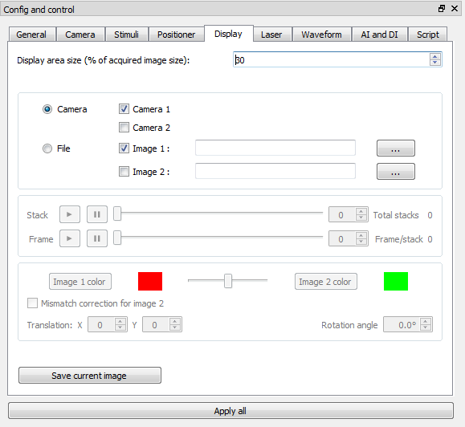

Display tab
This tab is used to set the configuration of the display window and also inspect the acquired image.
- Display area size : scales the display size.
- Camera and File choose radio button : chooses which images to display between images form cameras or captured images from .imagine file. And, we can display images from two cameras in one display window by overlapping them with different colors or in two windows separately.
- Mismatch correction for image 2 : helps to find mismatch paramters between the two overlapped images. When we capture images from two cameras, usually mismatch happens because of the difference between two optical paths to the cameras. We can correct the mismatch between overlapped images in the display window by changing "Translation X","Translation Y" and "Rotation angle" spinbox values. Once a user find well matched parameters with these spinboxes, the user should do the actual correction with those parameters in following analysis with separate tools. Imagine does not do the actual mismatch correction to the data. If this mismatch correction is performed before acqusition, these parameters wil be saved in the .imagine output file.
- Save current image : takes a snapshot of current display window.
